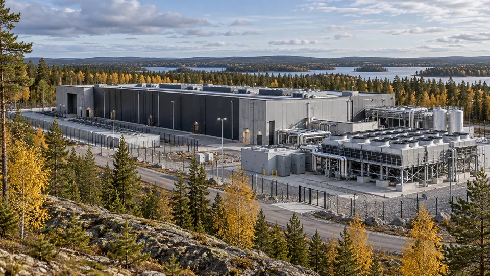

Scaleway’s Sweden Project Gives European AI Buyers Another Hardware Choice
The announced AMD-based supercomputer broadens Scaleway’s infrastructure portfolio. For customers, software compatibility and operating terms matter alongside accelerator capacity.

Scaleway announced an AI supercomputer project in Sweden on October 13, its first deployment of that kind outside France. The company says the system will use AMD Instinct MI355X accelerators and the ROCm software ecosystem. The announcement adds another prospective source of AI computing capacity for European customers.
For buyers, the significance is the additional architecture and supplier choice. It is not yet evidence that moving an existing workload will be easy or that the new capacity will offer the lowest cost for every task.
The system extends beyond an accelerator order
Scaleway names Bull for cluster integration, Giga Computing for servers, HPE Networking for Ethernet, VAST Data for the data platform and Motul for cooling fluid. The list underscores that the project depends on several layers working together, rather than on GPUs alone.
The company describes the infrastructure as designed for demanding AI workloads. That is a stated objective. Customers still need information about service availability, allocations and the configuration they will actually be able to use.
A component specification and a cloud service are different products. The latter includes the software environment, network behavior, storage and operational support that determine whether a customer can complete its work.
A migration has its own cost
A team with an established workload may have code, tools and staff experience tied to its current platform. An alternative can create negotiating room and reduce dependence, but converting that option into a usable service requires validation.
A sensible comparison holds the task and quality standard constant. It measures completed work, errors, engineering time and operating costs. Comparing advertised hardware prices while ignoring the work required to adapt a system can produce an attractive saving that never materializes.
Testing also needs to distinguish training from inference and small experiments from sustained production. A configuration that works for a demonstration may face different bottlenecks when jobs run continuously or several teams share capacity.
A European location answers only part of the control question
Scaleway places the project within its expansion in Sweden and links the location to the country’s electricity mix. Geographic location is relevant to infrastructure planning. It does not by itself establish a complete legal, security or operational boundary for a customer’s data.
Contracts, administrator access, support arrangements, backups and the software supply chain need separate consideration. A buyer should be able to identify who can act on the system and under what conditions, rather than assuming that a national address answers every control question.
The same care applies to environmental claims. Evaluating a workload requires an appropriate boundary for electricity use and the service being compared. A favorable location is part of that assessment, not a substitute for measuring the operation.
Compare the cost of completed work rather than reserved capacity
A reserved hour of computing can include setup, data movement and time when processors wait for another part of the system. Those intervals affect the cost of a finished job even when the hourly hardware price is attractive. A buyer should compare an equivalent workload from preparation through accepted output, with a stated quality standard.
Service terms add another layer. Availability commitments, support response and the handling of interrupted jobs can change the economic value of nominally similar capacity. The project's component list does not establish those customer terms. Their publication would make the new supplier option easier to compare with an existing service.
Availability will make the choice real
The next meaningful milestones are a clear service timetable, accessible capacity and evidence from customers running representative workloads. None can be inferred solely from a partnership announcement.
The project gives European AI companies another option to examine as demand for computing grows. Its commercial value will depend on how well that option works in practice: compatible software, reliable delivery and operating terms that remain attractive after the transition costs are counted.
Sources (2)
For informational purposes. This article is not investment advice.